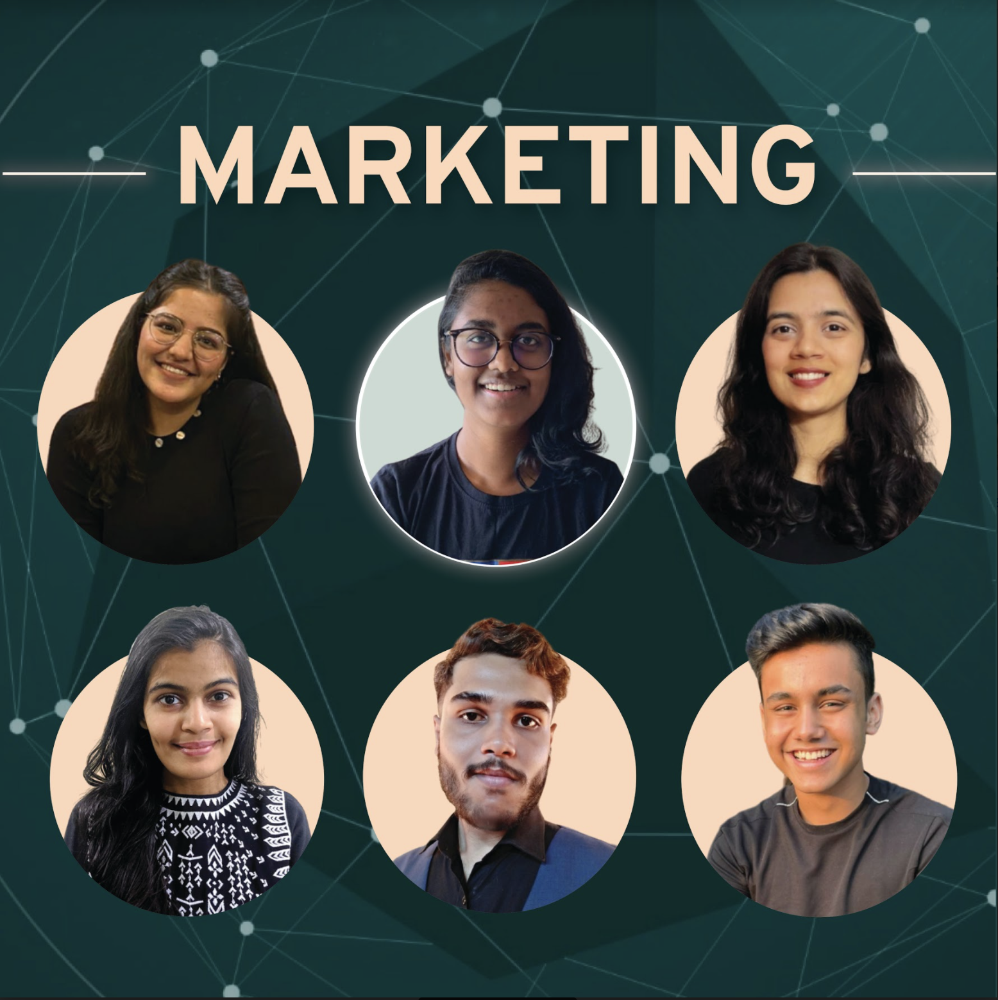
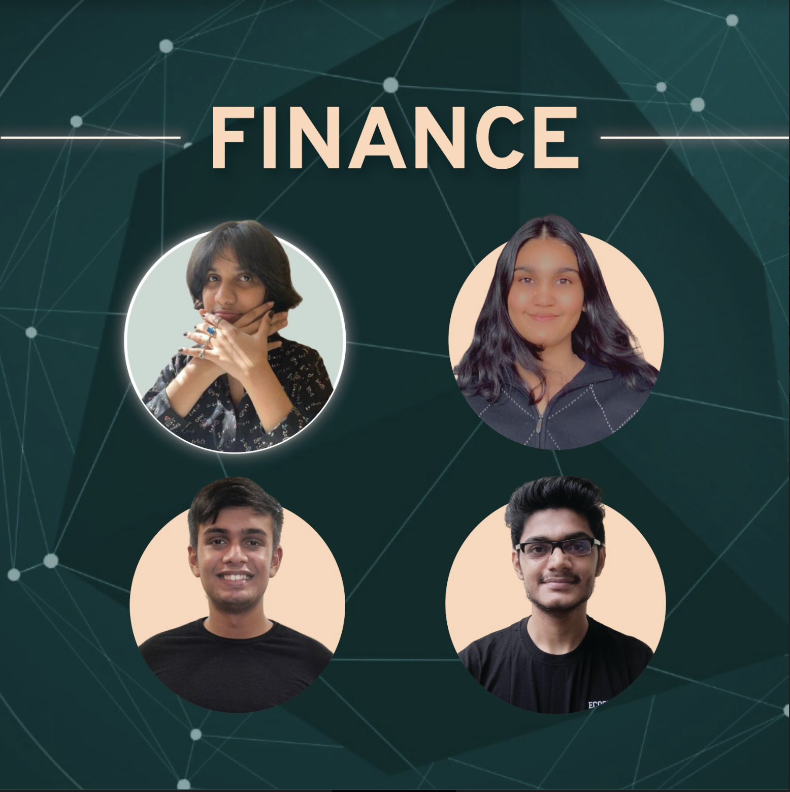
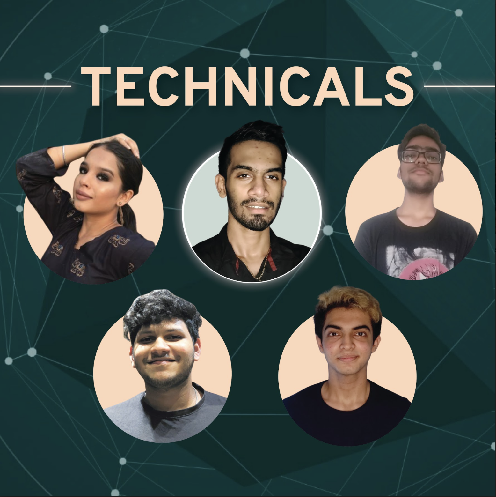

The Quartet
The task of rerouting the legacy in the first-ever virtual Malhar lies in the hands of the Big Four. Q’21 is a melange of passion, potential, pretence and tons of humour. Though four, the quartet functions as a single entity. They’re ones to kickstart fest preparations and are also the ones who sign the event off. The ones functioning virtually; the present quartet seeks to garnish this mediated Malhar with loads of positivity and the same amount of hype and enthusiasm as it has ever been.

Networking
They (net)work their way through everything that they need for Malhar and did the "Am I audible?" with an audience before it was the new normal.
Supreme graphics, expert salesman shop and technical expertise is what they bring to the table!

Computers
Computers as a department chooses to reside on Discord. In addition to the painful tracking down of bugs and trying to fix them, you'll probably find one member of the department or another awake at any time of the day. For all your tech related issues whether it’s finding snippets of code through infinite hours of scrolling, if there's something that's "bugging" you, or helping the other OGs with all the problems in their computers falls right under their domain.

Creatives
Creatives has merged with FnD this year to make one big family fuelled by a mutual love-hate relationship with Adobe. The department that ideates and creates together but also they bond over hunching over their laptops for hours making countless revisions to their work. Last minute changes and digital art are their priorities. They perpetually run on all-nighters and sticker collections. Despite appearing to be on top of their responsibilities, the harsh reality is that they still haven’t had a bonding session for the department.

Public Relations
This department is the face of the festival. They know what to sell and how to sell it. They range starkly from being multi-taskers to multi-linguists. They truly understand the aesthetics of Malhar and carefully put it on a platter for the world to watch. This department is in charge of the Social Media world and the press. If you see the booming Instagram stats, you know that the PR masterminds are proud of their good work.

Management
These are departments forming the compass that gives the fest direction. What are Management Departments like, you ask?
Well they do the tech, the money, the budget AND they're funny.

Marketing
The backbone of Malhar, Marketing brings in all the cash (and much more) that is needed to run the whole show. On a regular day, they are stuck on tiring, long calls, working hard to get the financial support we need for Malhar. Due to their contagious enthusiasm and ambition, they get the work done to get the base ready for Malhar to be built on. Their specialities lie in multitasking and being extremely talented!

Finance
The Xavier's ‘Moffice’ houses a group of calculative individuals who look after the financing and budgeting of the fest. One might yawn at their monotonous engagement with spreadsheets, organisation, numbers, math and research but that’s where the money comes from! While dealing with a tight budget in view of the situation, the finance department is at its best, trying not to compromise on the necessary expenses. The financers tally their puns and funs and always strike a balance between work and play!

Technicals
“Mic check 123!” Texxx has its wires, wirlesses and connections with all the other departments of Malhar. Being the warehouse of all technical support, the department illuminates the fest by sweating through the rehearsals, trials and mocks. The drastic effect of the new normal has challenged this bunch of technical people to construct a virtual stage and help people experience the festive vibe of Malher on their screens.Besides being the only big 4 that survived the online set up, Texxx has transitioned to become an events department this year.

Events
The ones who are keeping the competitive spirit of Malhar alive and rerouting the legacy of Malhar's events in this never-seen-before virtual setup. It's them who make Malhar as Event-ful as it gets!

Administration
The rulebook creator of Malhar, Admin, works in the shadows to ensure the smooth functioning of this fest. The baby of sub departments i.e. Contingency Communication is the newest addition to the department. When in doubt, Admin is the department to fall back on. Here at Admin, they try to ease out the complicated, technical processes for the other departments. Being the most trustworthy of all, Admin abides by the motto "The show, in case of Malhar, the grand show, must go on."

Conclave
If there is one department that merges the fun Malhar with an insightful experience, it is Conclave. Bagging the title of ‘Elites’, department conclave does justice to it year after year with their list of speakers that reflect vision and innovation at best. They are known for being rather secretive till the day of the big reveal, when they astonish each person with their perfect work. Managing to bring onto the stage some of the biggest names with brilliant minds, they know how to multitask and keep calm under pressure.

Fine Arts
Creativity, Novelty, Innovation and Talent - You name it, we paint it. The department that never fails to include shades of colours in your life, FA is the one with equal parts of coffee and paint stains. With paint brushes in their pockets, we are ready to e-voke the Van Gogh in you. With attention to detail, we ensure that precision remains our top priority, along with painting everlasting bonds. In your mental maze of intricate designs and patterns, FA will be your flashlight and thus all (de)signs will lead you to us.

Literary Arts
Whenever in need of testing your wits, LA is the department to approach. The pun generator of all departments, LA is extremely precise about that one item you can never say no to, i.e. cheesecake (it is the official food of this department). Full of whack individuals, LA loves to believe that they're living a movie life, preferably 'LA LA LAnd'. As our OC reiterates, "LA is Fam," a warm environment for each and everyone, that we can safely call Home.

Performing Arts
The Performing Arts Department this year is the first of its kind bearing the herculean task of fusing both IPA and WPA into one! IPA or Indian Performing Arts is just the right amalgamation of all the Hindi films that we love. On the other hand, the WPA or the World Performing Arts brings together different cultures, while offering an inclusive environment. Team PA lights up the workforce of Malhar with their energetic ideas. If you see Malhar as the perfect concoction of music, dance and cheerful spirits, you know who made this possible.